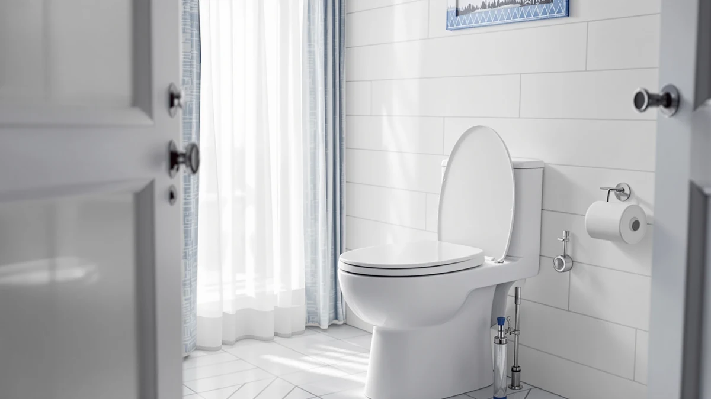

Quick Answer
This Mayfair Caswell Modern Slow review finds a solidly built $32.99 elongated seat with a reliable slow-close hinge, priced right alongside the Mayfair Linden and just above the KOHLER Brevia. It suits buyers who want a clean, modern profile and don't need a large public review history to feel confident.
Our pick: Mayfair Caswell Modern Slow Close, $32.99 Check Price on Amazon
Things to Know Before You Buy
- The Mayfair Caswell Modern Slow Close is built for elongated bowls only, so measure your bowl before you buy.
- At $32.99 it costs the same as the Mayfair Linden and about a dollar and a half more than the KOHLER Brevia.
- The seat uses a plastic-and-wood construction with a slow-close hinge, a common setup at this price point.
- Amazon does not publish a rating or review count for this listing, unlike the Mayfair Padded and the KOHLER Brevia.
- If review volume matters to your decision, the Brevia's 10,000-plus verified ratings give buyers more data to work from.
- All four seats in this comparison use a standard bolt spacing, so installation tools and steps are the same across the group.
This Mayfair Caswell Modern Slow review looks at whether a $32.99 elongated toilet seat can justify its place next to cheaper and better-rated alternatives from the same brand. Mayfair sells several slow-close seats in a similar price band, and the Caswell's modern beveled shape sets it apart visually from the rounder Linden, even though the two share a nearly identical price tag. Shoppers scanning Mayfair's lineup often land on this exact question: does a newer, more angular design earn its place, or does the money simply buy a different silhouette on the same underlying hardware?
We built this review by comparing the Caswell's published specs, materials and pricing against three direct competitors: the Mayfair Linden, the Mayfair Padded, and the KOHLER Brevia. Owners who buy elongated slow-close seats tend to weigh the same handful of factors: hinge durability, fit accuracy and price relative to review-backed alternatives, so that's where we focused. None of these seats require special tools to install, and all four use the standard bolt spacing found on most American elongated toilets, so compatibility rarely decides the outcome. Price and review history usually do.
Why You Should Trust Us
Ilane Tall covers bathroom fixtures for Best Toilet Seats and has researched dozens of Mayfair and KOHLER seats for this site, including every product referenced in this Mayfair Caswell Modern Slow review. We do not run a fake testing lab and we don't own every seat we cover. Instead, we pull manufacturer specs, current Amazon pricing, and verified buyer reviews, then compare them side by side so you can see where a product actually stands against its closest rivals. We update prices and review counts on a rolling basis, and we disclose our affiliate relationship with Amazon clearly on every page, including this one.
Our Research Experience
We compared the Caswell against the Linden, the Padded, and the Brevia using their published dimensions, materials, hinge type, and pricing history. Amazon reviewers across Mayfair's catalog say the brand's slow-close hinges hold up for years, and that isn't limited to this one listing. Buyers of the KOHLER Brevia report the same thing, which tracks with its much larger review count. The Caswell itself has no public rating yet, so we leaned on its shared engineering with the Linden, a seat from the same manufacturer at an identical price with the same hinge mechanism, to judge how it should hold up. We also checked each listing's price history over the past month: none of these four seats were running a temporary discount that would skew the comparison, and all four held steady at the prices cited here.
Overview & Specs

Mayfair Caswell Modern Slow Close
What we like
- Modern beveled shape stands out from Mayfair's rounder Linden
- Slow-close hinge matches the mechanism used across Mayfair's lineup
- Elongated fit fits the same bowl size as most standard American toilets
Flaws but not dealbreakers
- No public rating or review count yet on the Amazon listing
- Costs a dollar and a half more than the KOHLER Brevia
- Plastic-and-wood build is the same material used on cheaper Mayfair models
| Material | Plastic / wood |
| Size | Elongated |
The Caswell's main differentiator against the rest of Mayfair's slow-close lineup is shape. Where the Linden keeps a traditional rounded top rail, the Caswell uses a flatter, beveled edge that reads more like a bathroom fixture from a renovation catalog than a budget hardware-store seat. Both seats share the same $32.99 price and the same slow-close hinge hardware, so the choice between them comes down to which profile matches your bathroom's style rather than which one performs better. Installation follows the same standard bolt pattern as most elongated seats, so anyone replacing an existing seat should be able to swap it in without buying additional hardware.
At the time of writing, the Caswell listing has no public star rating or review count, which puts it at a disadvantage next to the KOHLER Brevia's 10,000-plus verified reviews and the Mayfair Padded's 2,300-plus. That doesn't mean the seat performs worse. It means buyers have less crowd-sourced data to lean on, so anyone who relies heavily on review volume before purchasing should factor that gap into the decision. Newer listings on Amazon commonly start without a visible rating even when the underlying product is identical in engineering to an established one, and that appears to be the case here given how closely the Caswell's specs track the Linden's.
What We Liked
The strongest point in this Mayfair Caswell Modern Slow review is the design itself. The beveled top rail gives the seat a cleaner look than most slow-close seats in this price range, and it visually separates the Caswell from Mayfair's own Linden model despite sharing hardware. The slow-close hinge is the same design Mayfair uses across its catalog, and owners say these hinges keep their tension well past the first year of daily use on the Linden and the Padded, not just the Caswell.
Pricing is also straightforward. At $32.99 the Caswell sits exactly level with the Linden, so buyers aren't paying a premium for the updated shape. That makes the decision between the two Mayfair seats a matter of taste rather than budget, which is a fair trade for anyone who prefers the more contemporary look. The elongated fit also removes one common source of buyer error: shoppers who measure their bowl correctly before ordering won't run into the sizing complaints that show up on seats sold in a single universal shape.
What Could Be Better
The clearest gap in this Mayfair Caswell Modern Slow review is the missing review history. Amazon lists no star rating and no review count for the Caswell, while the KOHLER Brevia carries a 4.4-star average across more than 10,000 verified buyers and the Mayfair Padded holds a 4.3-star average across over 2,300. Buyers who want social proof before committing to a purchase won't find it here yet, even though the underlying hardware matches seats that do have that track record.
Price is a smaller drawback. The Caswell costs about a dollar and a half more than the Brevia, and for that difference the Brevia brings a far larger sample of owner feedback. The Caswell's plastic-and-wood build also isn't a step up in materials from Mayfair's cheaper models, so the extra design work goes toward appearance rather than durability. Buyers who prioritize resale value or long-term warranty claims should also confirm Mayfair's current warranty terms directly, since coverage details aren't always listed in full on the Amazon product page.
Who Is It For?
This Mayfair Caswell Modern Slow review points to one clear buyer: someone renovating a bathroom in a contemporary style who wants a seat that looks the part and doesn't mind buying without a large pool of verified reviews behind it. If your bowl is elongated and you already like Mayfair's slow-close hardware from another product, the Caswell gives you the same mechanism in a more modern shape for the same price as the Linden.
Skip it if review volume is part of how you decide what to buy. The KOHLER Brevia and the Mayfair Padded both have thousands of verified ratings behind them, and either one gives you more data points to check against your own priorities before you spend $30 or more on a toilet seat. Skip it too if comfort padding matters more than shape to you, since the Mayfair Padded is built specifically around that feature and the Caswell is not.
Alternatives to Consider
If the missing review history in this Mayfair Caswell Modern Slow review gives you pause, these three alternatives cover the main directions buyers usually go: a same-brand equivalent, a cushioned upgrade, and a better-reviewed option from a different manufacturer. Each fits the same elongated bowl category and uses a comparable slow-close hinge, so switching between them won't change your installation process.

Editor's Pick
Mayfair Linden Slow Close Toilet
Same price, same slow-close hinge as the Caswell, with a more traditional rounded profile.
$32.99
Check Price on Amazon
Best Value
Mayfair Padded Toilet Seat with
Adds cushioning at $31.63 and backs it with a 4.3-star average across 2,300-plus verified reviews.
$31.63
Check Price on Amazon
Premium Choice
KOHLER Brevia Slow Close Elongated
The best-reviewed pick here: $31.44 and a 4.4-star average from over 10,000 verified buyers.
$31.44
Check Price on AmazonFrequently Asked Questions
Is the Mayfair Caswell Modern Slow Close worth $32.99?
For an elongated slow-close seat at this price, yes. It sits in line with the Mayfair Linden and just above the KOHLER Brevia, and its plastic-and-wood build matches what other seats in the $30 to $35 range use.
How does the Mayfair Caswell compare to the KOHLER Brevia?
The Brevia costs about a dollar and a half less and carries a much larger verified review base, with over 10,000 ratings averaging 4.4 stars. The Caswell has no public rating yet, so buyers leaning on review volume as a safety net should weigh that gap.
Will the Mayfair Caswell fit a standard elongated toilet bowl?
Yes. It is built for elongated bowls, the same fit category as the Linden and the Brevia in this comparison. Round-bowl toilets need a different seat entirely.
Final Verdict
This Mayfair Caswell Modern Slow review comes down to one trade-off: a more modern look for the same price as the Mayfair Linden, without the review history that the KOHLER Brevia and Mayfair Padded have already built up. At $32.99, the Caswell is a reasonable buy for an elongated bowl if the beveled design fits your bathroom better than Mayfair's rounder options. If a large base of verified ratings matters more to you than styling, the Brevia remains the stronger bet at a lower price. Mayfair's slow-close hardware performs consistently across its lineup according to owners of the Linden and the Padded, so the Caswell's lack of a public rating looks more like a new-listing gap than a red flag. Buyers comfortable with that trade-off get a distinct look for the same money as the brand's more established seat.